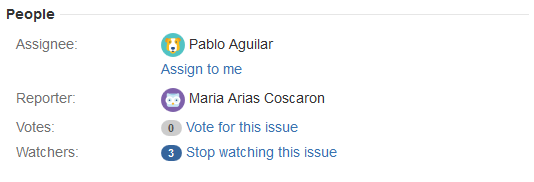

The purpose of this guide is to provide access to detailed information regarding working with Issues in the context of MCDI's JIRA installation.
Atlassian Documentation
MCDI's JIRA installation has been designed from the ground up to mirror the best-practice concepts for structural organization as outlined by Atlassian, in an effort to ensure that their system documentation is maximally compatible with our own. In light of that fact, an effort has been made to include links to relevant articles within the Atlassian knowledge-base for further reading where possible.
You can view an overview of working with issues in JIRA Core here.
General Notes
MCDI's JIRA instance is currently configured to serve two different types of projects:
- JIRA Core projects, which the majority of users will utilize for day-to-day work.
- JIRA Software projects, which will be utilized primarily by IT for managing development activities.
Note: A third type of project, the JIRA Helpdesk project, is supported for first-line IT and Customer Service
functions, but not implemented at this time.
Depending upon the project type, the available issue types and their use cases will change. Please refer to the appropriate section for your use case.
JIRA Core Issue Types (partially complete)
JIRA Software Issue Types (not yet available)
Anatomy of an Issue
When accessed, each issue will display a screen like the one below. This screen can be broken down into a number of regions, which all serve different functions. In this section, a detailed overview of the functions and vocabulary related to each region will be laid out for easy reference, moving from the top right to the bottom left.

Issue Header
The Issue Header region shows three important pieces of information:
- The name of the parent project (ZICORE)
- The issue's ID (ZICORE-28)
- The name of the issue (Work Planning)
Issue Toolbar
The issue toolbar gives you easy access to some of the most important functions within an issue.
- Clicking the "Edit" button will open a form where you can edit multiple fields at once before saving.
- Clicking the "Comment" button will snap your view to the Comment region and open an editor for you so that you can leave a comment on the issue.
- Clicking the "Assign" button opens a dialog which allows you to reassign an issue to another user and leave a comment about the assignment change.
- Clicking the "More" button will open a menu with advanced functions not covered here...yet.
- The next three buttons and their usage will change depending on the workflow configured for the issue type. Please see Default Workflow Usage for more information.
- The "Admin" button will not be visible for the majority of users, but gives access to multiple power-user functions.
- The square button with the arrow coming out of it is the "Share" button. This button reveals a dialog which will assist you in creating an external link to the issue.
- Clicking the "Export" button will reveal a set of options for saving the issue to your local machine in various formats.
Issue Details

The Issue Details region allows you to quickly view the essential metadata of an issue.
- The "Type" field shows you what type of issue the issue is. Please see the issue type section for your project for more information.
- The "Priority" field shows you the issue's current priority level.
- The "Component/s" field not only shows the configured component/s for an issue, it provides hyperlinks to these components, which can be used for navigational purposes.
- The "Labels" field shows all of the keywords which other users have tagged the issue with. Labels allow users to add ad-hoc semantic search dimensions to issues for future reference.
- To add a label, click the pencil next to the field, type in your desired label/s, and click the check mark.
- The "Status" field shows the icon for the workflow step that the issue is currently in.
- Clicking the "View Workflow" link will show you a flowchart for the workflow, in case you need a cheat sheet.
- The "Resolution" field will be updated with a resolution message once the issue has been resolved. Please see Default Workflow Usage for more information regarding issue resolution.
People

The People region gives you a window into the other users interacting with the issue alongside you.
- The "Assignee" field shows you the current user assigned to the task.
- The Assignee role is explained in more detail on the Default Workflow Usage, but essentially, the Assignee is the user who needs to take the next step in moving the issue along through the workflow.
- If you need to take over the Assignee role, you can click the "Assign to me" link in order to take ownership.
- The "Reporter" field shows the name of the user that initially reported the issue. This knowledge can be useful if you're looking to find a source for more information about a given issue.
- The "Vote" field shows a tally of the number of users who have clicked the "Vote for this issue" link, indicating that they would like it to be given priority over other issues.
- There is no formal requirement that issues with a high number of votes be given priority, however, this can be a useful tool for making decisions about your time when faced with multiple open issues.
- Please vote sparingly.
- The "Watchers" field shows the number of people who are currently receiving email notifications for the issue.
- As a general rule, any time you interact with an issue in any way other than viewing it (i.e. changing a status, leaving a comment, etc.), you will be added to the Watchers list for that issue.
- To view a list of users watching the issue, simply click the number in the circle.
- To stop watching the issue, click the "Stop watching this issue" link.
- To re-subscribe to the issue as a watcher, click the "Start watching this issue" link, which will replace the "Stop watching this issue" link when you are not subscribed.
Description
The Description region is a text field which is used to store an explanation of what the issue is for.
- It should include information which is relevant to assisting assigned users in moving the issue towards a resolution.
- Epics and Stories may not always have descriptions, but Subtasks and Tasks should always have a description.
- The description can be edited by clicking on the Description region, or through the Edit menu.
Dates
- The Dates region allows users to see the time and date when the issue was created, when it was last updated, and once closed, the date of closure.
Attachments
The Attachments region is used to view, manage, and organize documents attached to a given issue. JIRA's core attachment functionality has been expanded through the use of a plugin called Smart Attachments. The extended documentation for the plugin is available here.
- To upload a new document to a task, drag the file from a folder on your computer and hold it over the issue screen. An overlay of boxes corresponding to the different categories available for the document will appear- simply release the file over the box that corresponds to the category you would like to upload the document to, and JIRA will handle the rest of the upload process.
- The maximum allowed file size for each individual attachment is 57.22MB.
Once you have uploaded attachments to an issue, the Attachments region will look something like this:

- To move individual files between categories, simply click and drag.
- Clicking on the hyperlinked filename will download a standalone copy of the file to your system. A copy downloaded in this fashion will not maintain its link to JIRA's version control.
- In order to check out the file for editing within the version control system (VCS), you will need to access the file's dropdown menu, as shown below.
- Once you have opened the file's dropdown menu, select "Edit in Office." Please note: it is only possible to edit Office documents (i.e. .docx/.xlsx/.pptx) in this fashion.
- Click "OK" on any warning messages that may appear, and the file will open in the appropriate Office program.
- Saving the document in Office will automatically create a new version of the file within JIRA's VCS. To view past revisions, click the >> symbol next to a given document.
- You can leave a comment on a document by clicking the "Edit Comment" button. To view a document's comment, click the blue speech bubble displayed next to the file size.
- You can manually add revisions to documents that cannot be opened directly in Office by selecting the "Upload New Revision" option from the dropdown menu.
- Clicking "Download All Revisions" will download a .zip file containing all revisions to your local machine.
- Clicking Rename will allow you to rename the file.
- Please note that there is a soft limit of 50-70 characters (including spaces) for filenames in JIRA. Exceeding this limit may cause an error when opening/otherwise working with a file. If you encounter one of these errors, simply shorten the filename to resolve the issue. See !!JIRA-5 for more information.
HipChat
Once HipChat has been rolled out to the user base, you will be able to instantly create a HipChat room to discuss the issue live with all of the issue's Watchers. This room will contain all of the information relating to the task, and features all of the hotlinking features that JIRA does (@mentions, auto-tagging, etc.).
!!As discussed in the 0.1.1.3 Release Notes, while HipChat is currently operational and fully integrated with MCDI's JIRA instance, it is not available to users at this time.
Child Issues
The Child Issues region is available for the Epic, Story, and Task issue types. Please see the issue type section for your project for more information.
While the region looks a little different when appearing under an Epic as opposed to a Story/Task (as shown below), the function of the region is the same across all issue types where it appears.
Epic:
Story/Task:
The Child Issues region shows all tasks which have a "belongs to" relationship with the current task. This hierarchical structure streamlines organization and navigation, while ensuring that all related issues are grouped together in a manner that is easy to understand.
To be continued...